2026-05-15
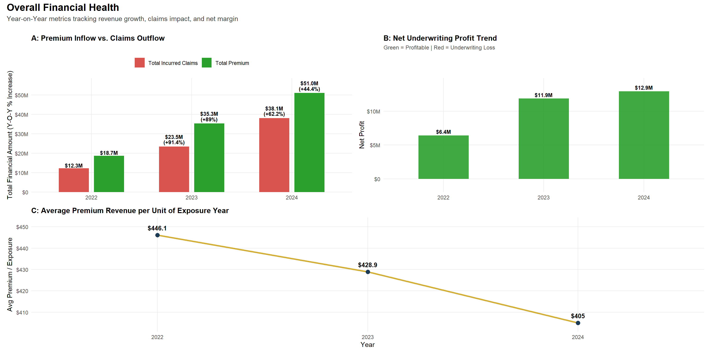
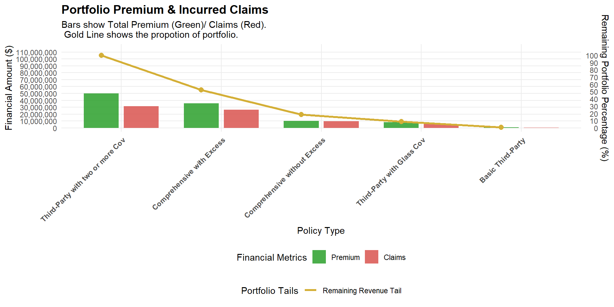
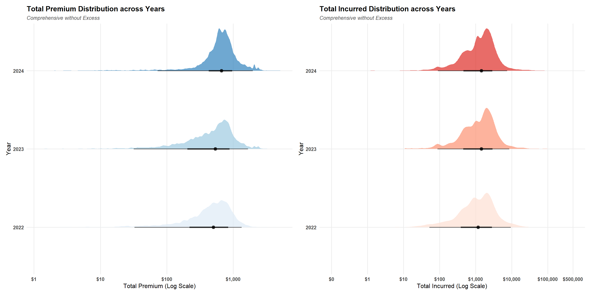
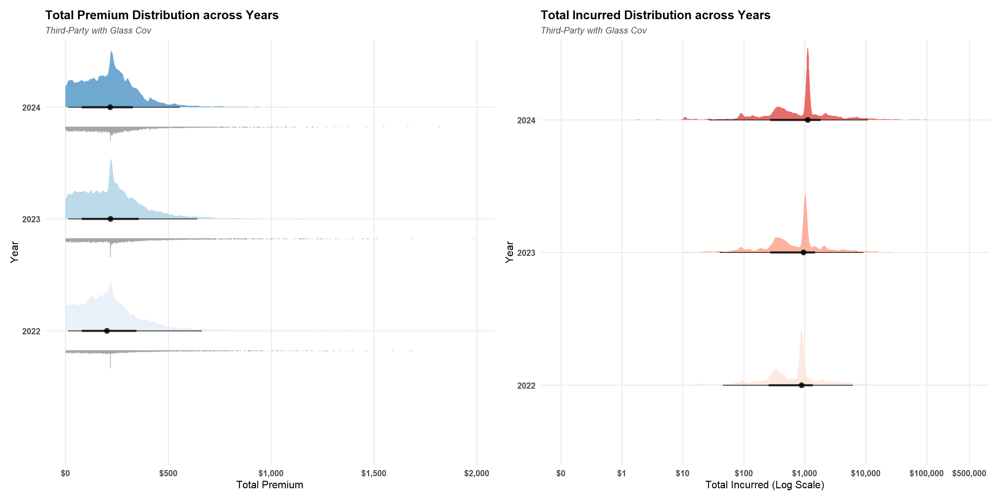
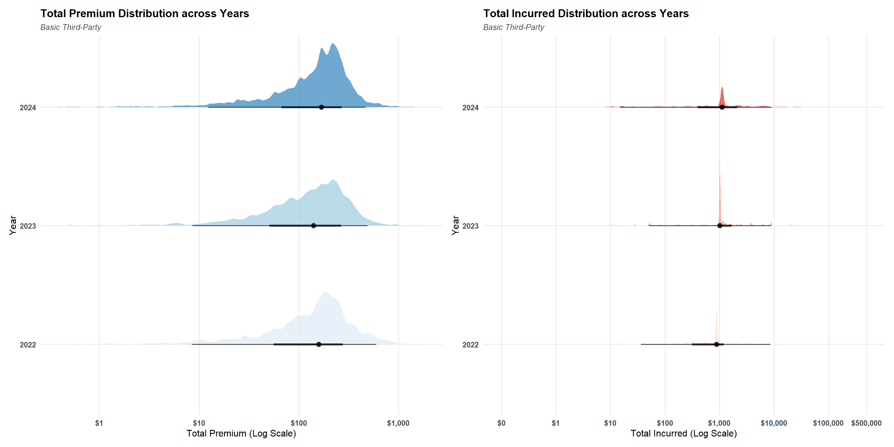
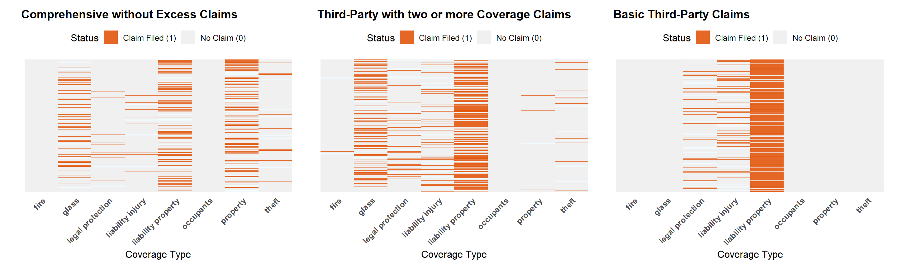
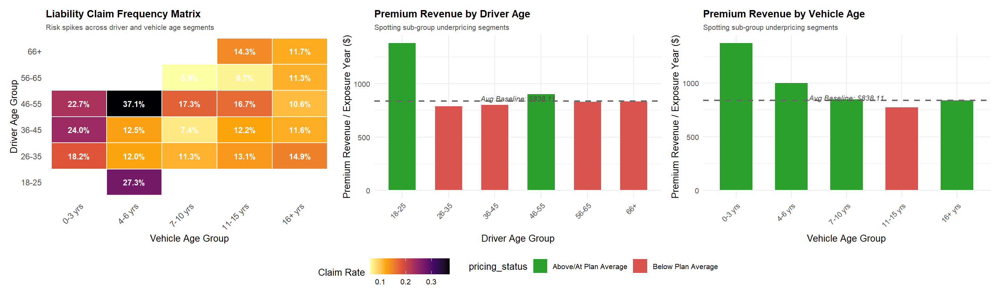
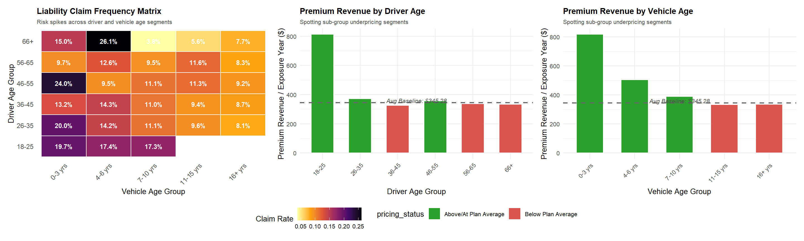
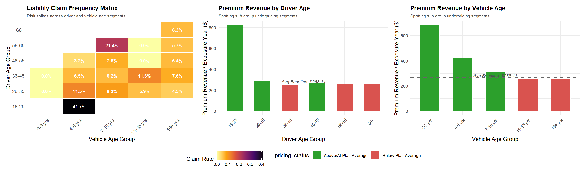
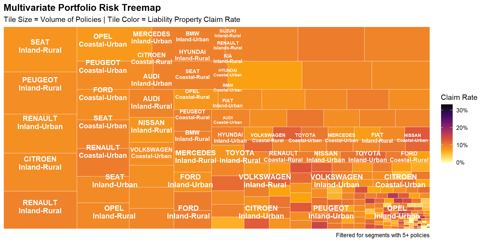
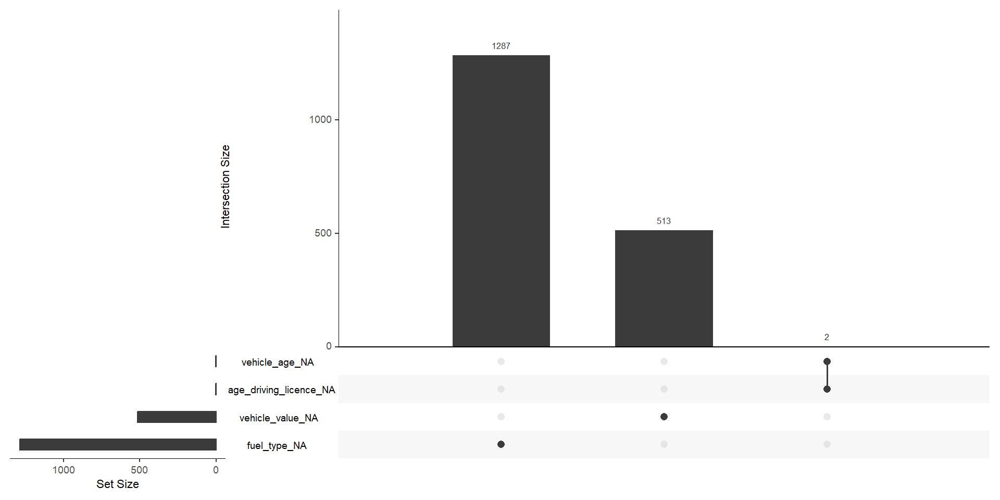
Over 80% of total premium revenue is reliant on just two offerings: Third-Party two or more coverages and Comprehensive with Excess.
Year-on-year premium growth has flattened, and we are receiving a lower average premium per exposure year across the business, signaling an urgent need to relook at baseline pricing.
Granular subgroup analysis reveals that while high-risk young drivers (\(18\text{--}25\)) are priced correctly, we are severely underpricing specific high-risk mature demographics:
Drivers aged \(36\text{--}55\) operating vehicles aged \(4\text{--}6\) years peak at a massive 37.1% claim frequency but are currently charged below-average premiums.
Senior operators aged \(66+\) driving vehicles aged \(4\text{--}6\) years generate a 26.1% claim rate while paying low baseline premiums.The Mature Leakage: Drivers aged \(56\text{--}65\) with vehicles aged \(7\text{--}10\) years run an elevated 21.4% claim rate but are granted below-average premium rates.
Drivers aged \(56\text{--}65\) with vehicles aged \(7\text{--}10\) years run an elevated 21.4% claim rate but are granted below-average premium rates